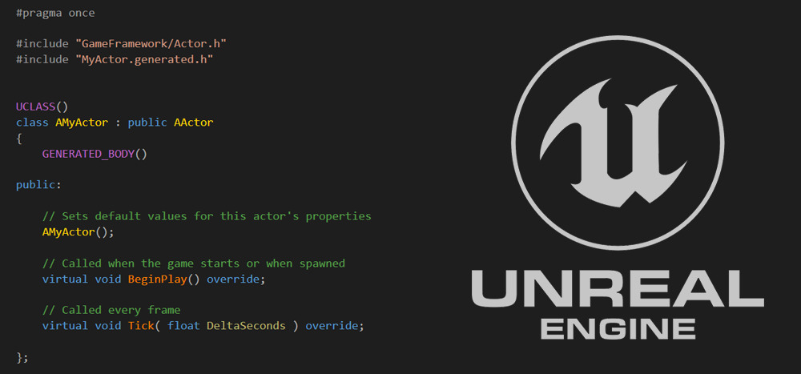

How to set up for C++ development
Instructions in this page are optional except for the programming team and
project management team.
*C++ project is requiered to build for server.

Prerequisite
Optional: Source Build Engine. Require 300 GB free space on disk. This will allow you to open Unreal without the launcher because we are building it from source.
Use Visual Studio 2019(UE Default) or JetBrains Rider(Recommended).
- Add yourself to the UnrealEngine Repository on Github (Ask admin to add you).
- Clone the Repo with GitKraken to a fast driver with 200GB free space. Tips: You can delete the Intermediate folder after you have opened the project to save space.
-
Follow the Readme file in the cloned repo, starting from the
section titled Getting up and Running. You will need the following
(included in the Readme) in your Visual Studio Installer:
- C++ profiling tools
- C++ Address Sanitizer (optional)
- Windows 10 SDK (10.0.18362 or newer)
- MSBuild
Building Project
- This should allow you to start building the Engine or the project after your clone is finished. Once it is cloned keep following the Readme file and go to the next step when you see the UE5.sln file.
- Open the .sln file with VS 2019 or Rider. In the solution explorer, under Engine, Right Click Your Projects >, Press Build (Ctrl + shift + b).
- After building is finished (first time takes about 40 mins, you can start setting up perforce while you wait), Right Click UE5 >, Go to Debug > Start new instance. This will open Unreal.
- Now you can create or browse to your .uproject file location to open up the project.